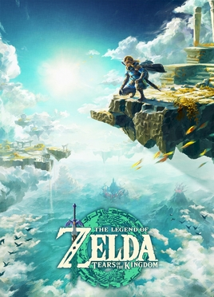
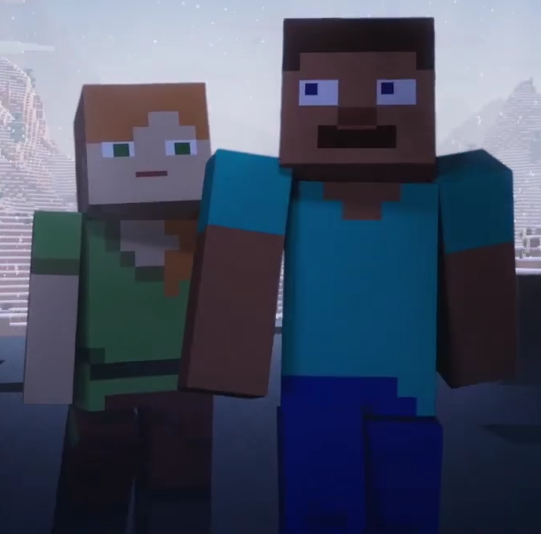
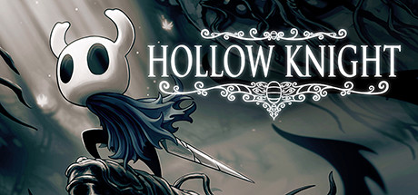
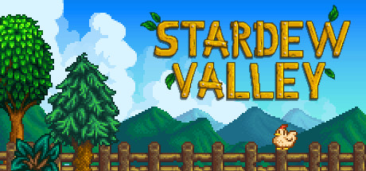

Game do mês9.8
Zelda: Tears of the Kingdom
Exploração, criatividade e um mundo que parece infinito.
análises publicadas
jogadores no site
Top 3 da semana
- 1Elden Ring9.5
- 2Hades9.2
- 3Celeste9.1
9.0

Minecraft
Sandbox
★★★★★
8.8

Hollow Knight
Metroidvania
★★★★☆
8.7

Stardew Valley
Simulação
★★★★☆
8.5

Portal 2
Puzzle
★★★★☆
Gêneros
Dê a sua nota!
Jogou algo bom? Conte para a comunidade.